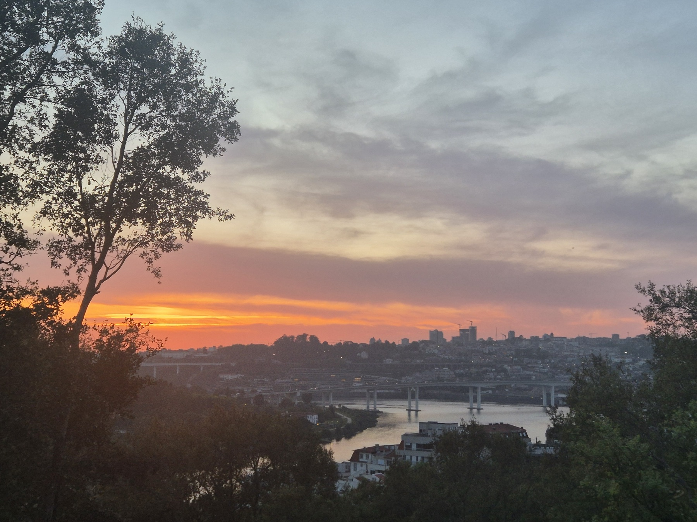
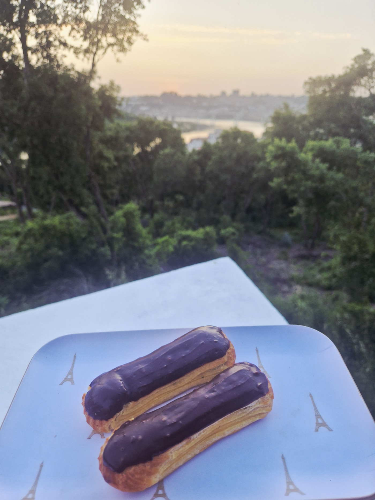
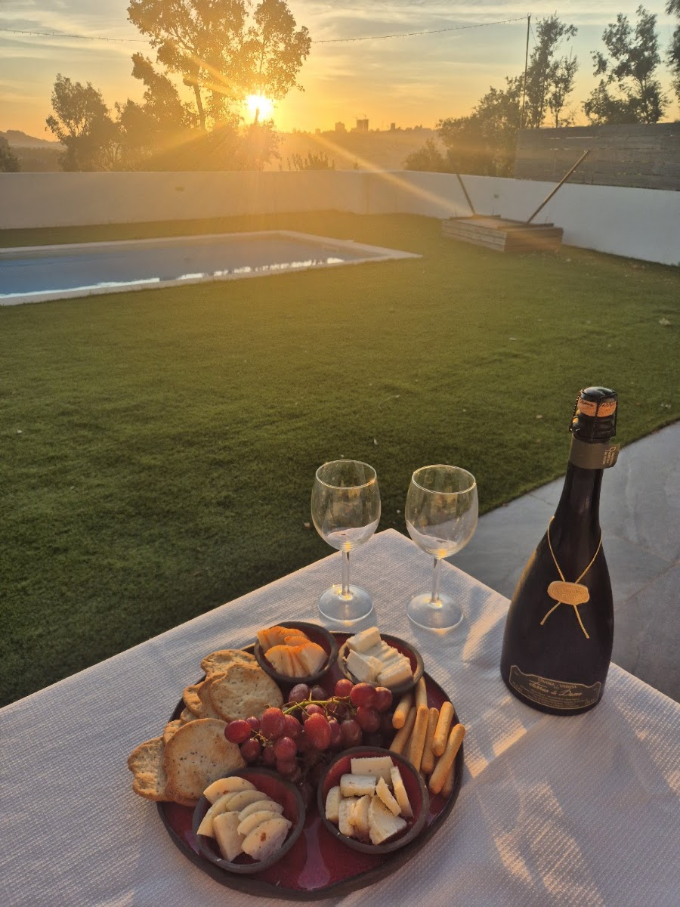
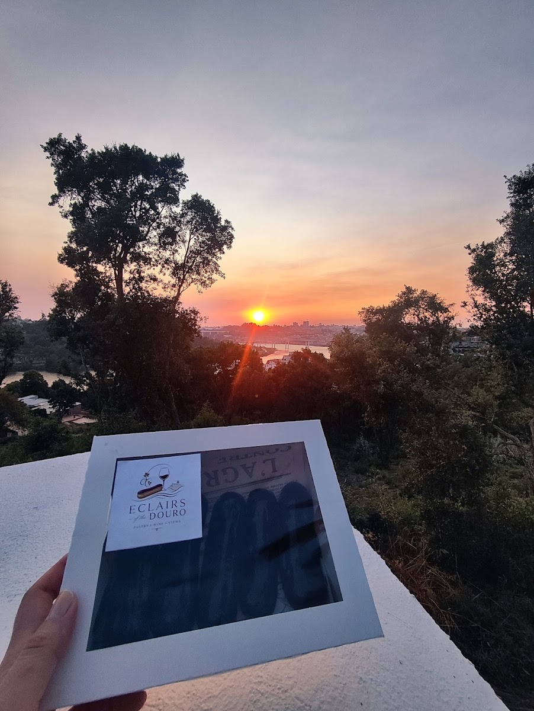
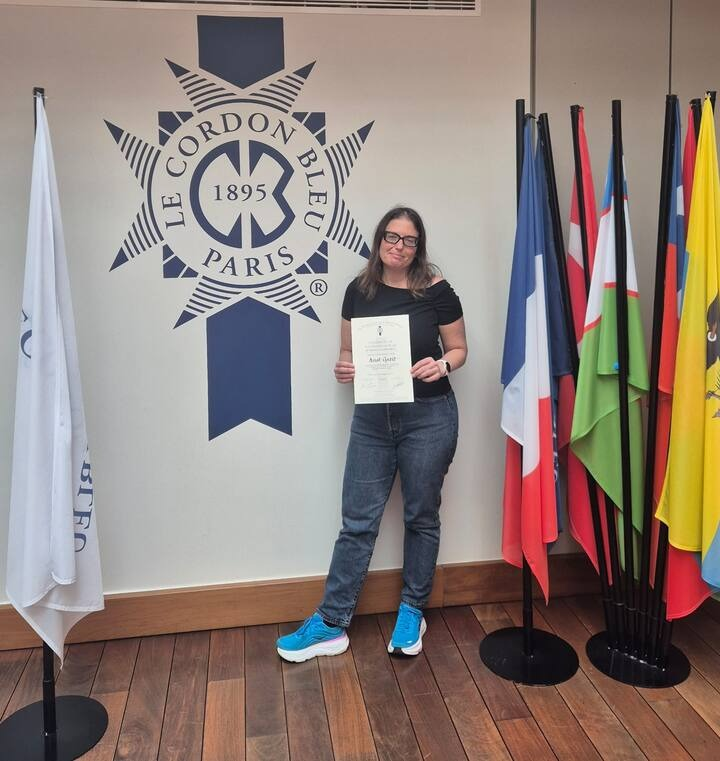

Make the choux
Mix, pipe and bake with Anat guiding the texture and technique step by step.
Learn to make French chocolate éclairs with Le Cordon Bleu-trained host Anat, then slow down over Portuguese wine and a Douro sunset.

You will learn every part of a classic éclair, but the point is not perfection. The point is making, tasting and sharing the moment.
Mix, pipe and bake with Anat guiding the texture and technique step by step.
Prepare smooth pastry cream, fill each shell and finish it with chocolate.
Share Portuguese wine and light snacks while the éclairs bake and cool.
Enjoy your work here, then leave with your éclairs and the recipe.

“So much more than a baking class.”
Come for the éclairs. Stay for the unhurried conversation, wine and changing light over the river.


“A perfect experience from start to finish. Anat is an amazing host.”
Guests repeatedly mention patient guidance, a warm welcome and how special the kitchen view feels.
Read all Google reviews“Anat was really friendly and patient with us.”
Recommended by a Porto local for visitors and locals alike.
“A hidden gem overlooking the Douro!”
Rated 5.0 on Viator, with flexible booking and free cancellation on eligible tickets.
See reviews on Viator
Anat Gazit trained professionally at Le Cordon Bleu Paris. She created this experience for people who want to learn something real without losing the joy of the evening.
With no more than six guests, there is time for every question, every piping bag and every imperfect first éclair.
The dedicated kitchen is in Valbom, overlooking the Douro. It is usually 8–15 minutes door to door by Uber or Bolt from central Porto.
No. The evening is designed for beginners and curious travelers. Anat guides every stage and keeps the pace relaxed.
Take an Uber or Bolt to Cooking an Experience in Valbom. The ride is usually 8–15 minutes from central Porto, depending on traffic.
All ingredients and equipment, Portuguese wine, light snacks, coffee or tea, the éclairs you make and a recipe to take home.
Yes. Private dates are available on request. Message Anat with your preferred date and the number of guests.
Small groups, personal guidance and only six places around the table.